Pennylane
En trio de product designers, nous avons repensé la gestion des notes de frais dans l’app mobile Pennylane, en parcourant toutes les étapes du processus, de la discovery au prototype testé.
Entretiens et tests utilisateurs, synthèse dans FigJam et user journey map détaillée.
Benchmark structuré en cinq axes et reformulation de la problématique.
Parcours de scan, formulaire de vérification avec la jauge de plafond et cartes de synthèse de l’accueil.
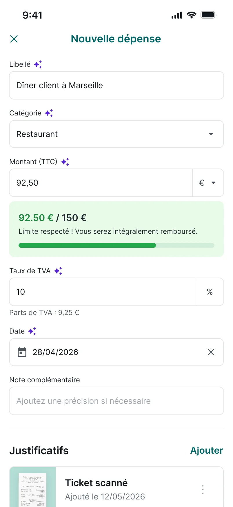
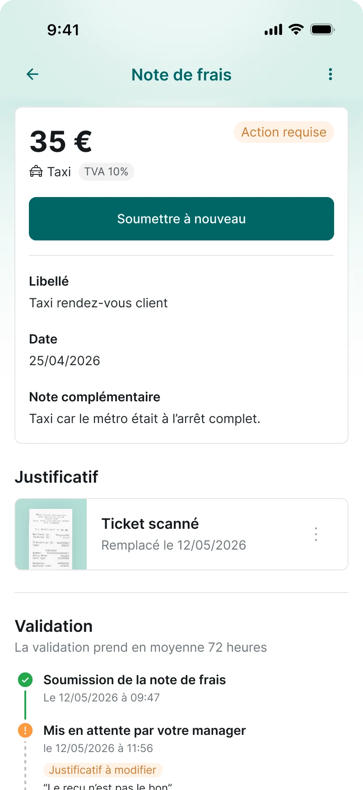
Pour mieux comprendre le problème, nous avons mené une recherche qualitative auprès de personnes qui avancent régulièrement des frais professionnels.
Interviews utilisateurs
Les objectifs :- Comprendre le contexte : types de dépenses, montants, fréquence
- Comprendre le parcours réel, de l’achat au remboursement
- Comprendre les frictions et les attentes
Ce que nous avons appris
L’OCR ne fait pas gagner de temps.
Pourquoi ?- Des erreurs fréquentes de pré-remplissage
- Tout vérifier et corriger à la main
- 3 / 5 voudraient un pré-remplissage fiable (montant, TVA, marchand)
Les règles de remboursement sont opaques.
Pourquoi ?- Des politiques éparpillées dans plusieurs documents
- Introuvables au moment de soumettre
- 3 / 5 ont déjà subi un refus ou un prélèvement sur salaire
Après l’envoi, plus aucune visibilité.
Pourquoi ?- Ni le statut, ni le montant total dû, ni la date
- 3 / 5 préfèrent relancer de vive voix ou par mail
La courbe émotionnelle chute là où l’utilisateur perd la main : à la saisie, par peur du refus, et au suivi, faute de délai annoncé. J’ai aussi construit une user journey map détaillée, base de notre cadrage.
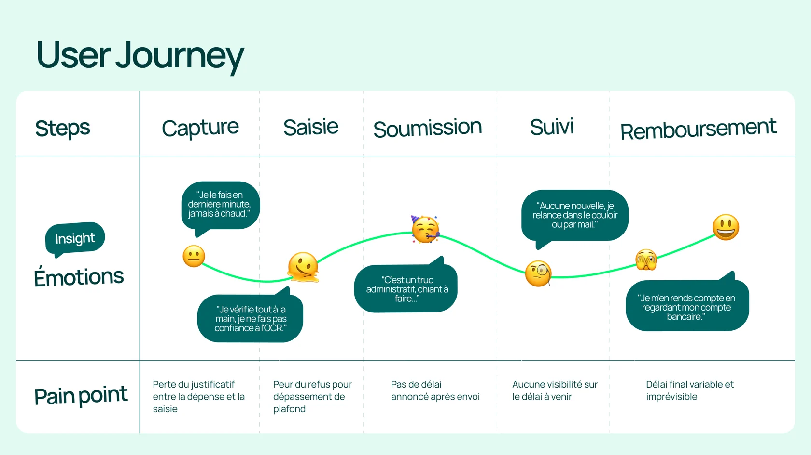
Comment simplifier la gestion des notes de frais en apportant une visibilité claire et rassurante sur les règles et les délais ?
Pour concevoir nos solutions, nous nous sommes inspirés d’apps de dépenses et de productivité, en cherchant des réponses à nos trois irritants. De mon côté, j’ai structuré la veille en cinq axes : suivi lisible, saisie facilitée, erreurs de l’OCR, règles dans l’app, notification du remboursement.
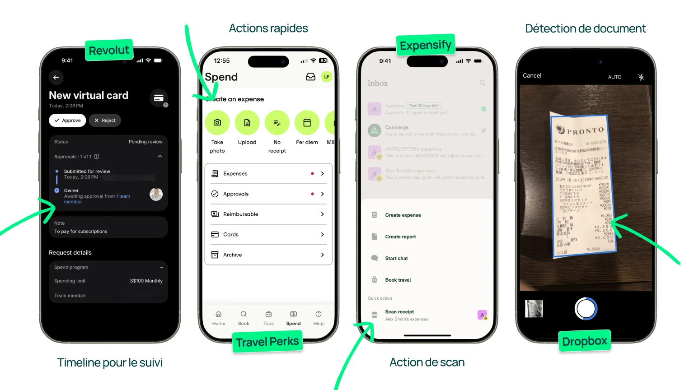
Cinq pistes de solutions
Notre V1 couvrait tout le parcours collaborateur : l’accueil et ses actions rapides, le scan et l’import de justificatifs, un formulaire pré-rempli avec rappel du plafond, puis le détail d’une note et son historique.
Vérifions nos hypothèses
Les objectifs :- Vérifier la réassurance : clarté des règles, suivi du statut
- Évaluer la simplification de la tâche
- Repérer les frictions dans le flux d’ajout
Ce que nous avons appris
Le scan est compris, mais la suite bloque.
- 4 / 4 trouvent le scan directement et en voient l’intérêt
- 2 / 4 ne comprennent pas qu’il faut toucher la vignette du reçu pour continuer
Importer plusieurs justificatifs d’un coup plaît.
- Un gain de temps attendu pour les déplacements
- Certains gardent le réflexe de les ajouter un par un
Le montant de l’accueil n’est pas compris.
- 2 / 4 ne savent pas à quoi correspondent les 120 € affichés
- 3 / 4 voudraient y voir les statuts et les actions à faire
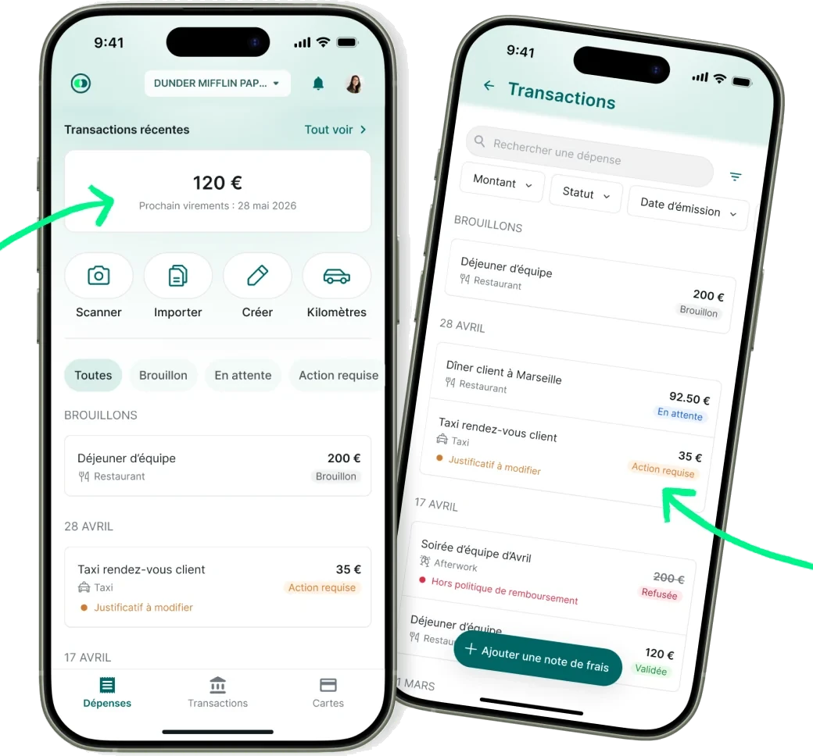
Version 1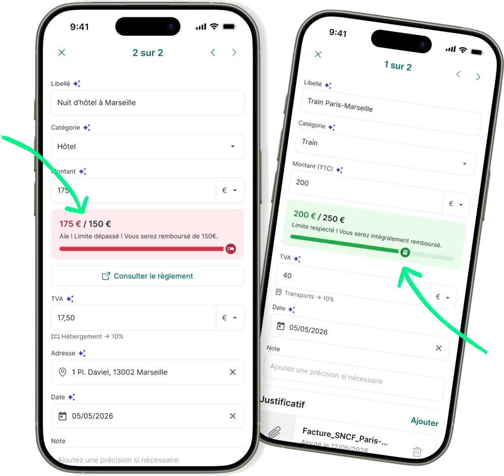
Version 1Le rappel du plafond rassure, mais le rouge fait peur.
- 2 / 4 apprécient le rappel du plafond
- 3 / 4 lisent le rouge comme un refus
L’historique et les délais rassurent.
- 3 / 4 apprécient l’historique détaillé
- 3 / 4 apprécient d’avoir une idée des délais de paiement
- 4 / 4 attendaient de saisir la TVA en taux, pas en euros
- 3 / 4 voulaient revoir leur reçu pendant la vérification
- 3 / 4 attendaient une date prévisionnelle de remboursement
- 3 / 4 ont trouvé confus le « supprimer puis ajouter » d’un justificatif
Chaque retour a été regroupé par thème dans FigJam (scan, formulaire, TVA, plafonds, timeline, accueil…), puis placé dans une matrice impact / effort et classé en P1, P2 et P3.
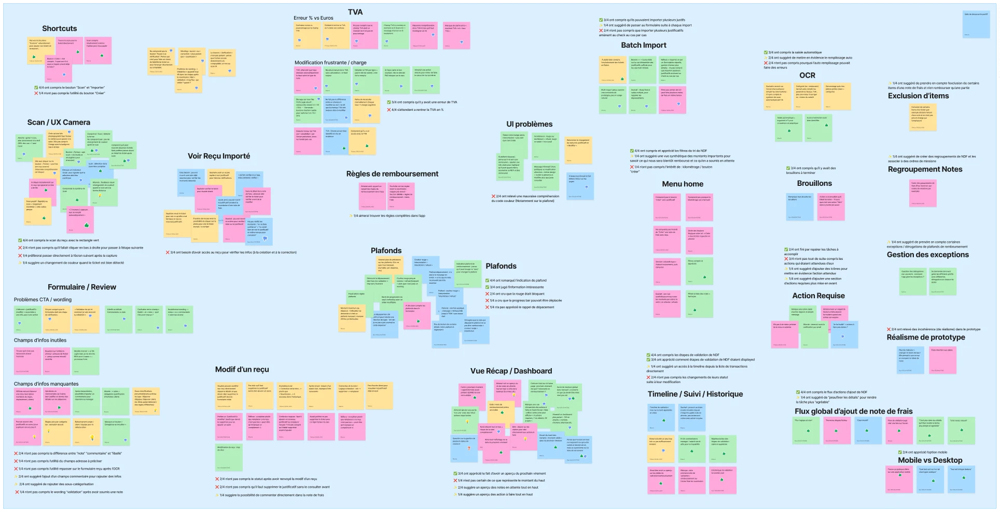
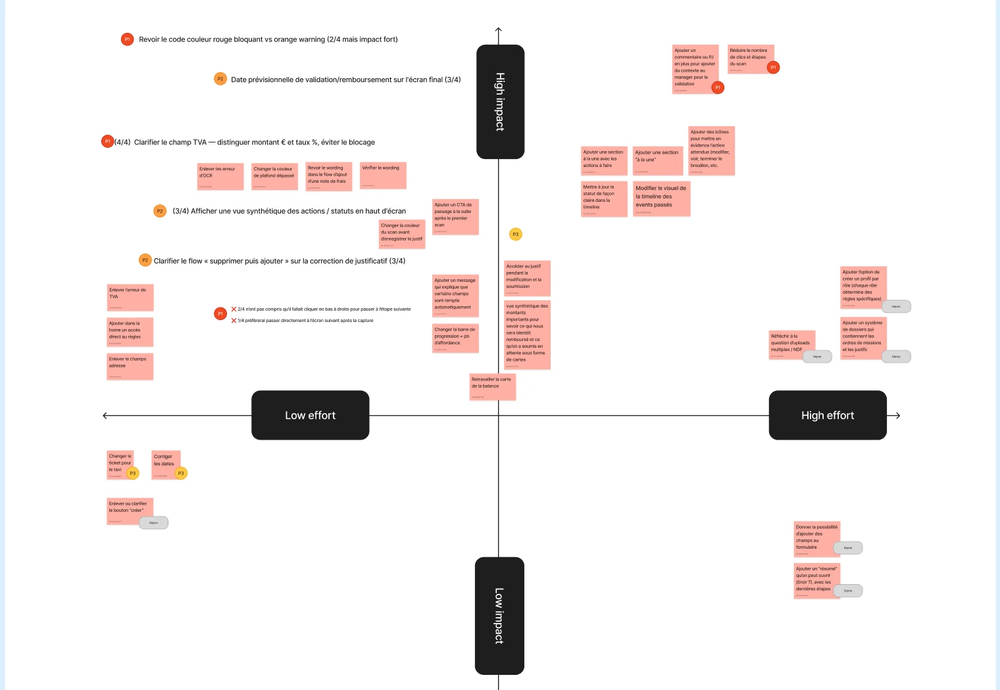
Rassurer à chaque étape, de la capture au virement
L’idée
Garder la promesse du scan, mais rendre visibles les règles, les statuts et les délais, pour que personne ne relance « dans le couloir ».
Quatre chantiers :
- Parcours scan : confirmation visuelle, accès direct au formulaire, TVA pré-calculée
- Détail d’une note : justificatif consultable, historique des statuts plus lisible
- Réassurance : politique de remboursement plus claire
- Accueil clarifié : montant à venir et date estimée du virement
La carte détaille le total des dépenses, la part déjà validée avec la date du prochain virement, puis les montants en attente et à corriger. Les filtres font ressortir les notes qui demandent une action.
Version 2Le reçu est détecté et cadré automatiquement, puis confirmé. On en ajoute d’autres ou on génère ses notes en un geste. Le formulaire arrive pré-rempli, et une icône signale chaque champ détecté.
Version 2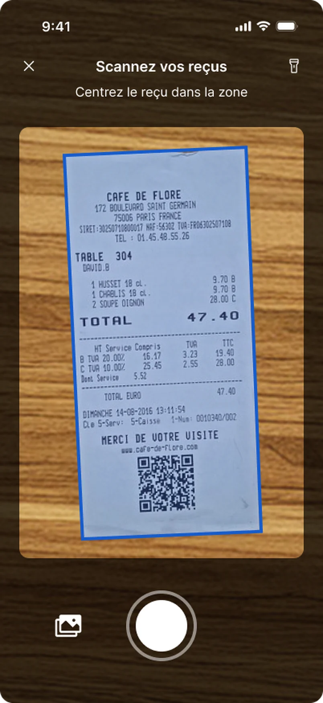
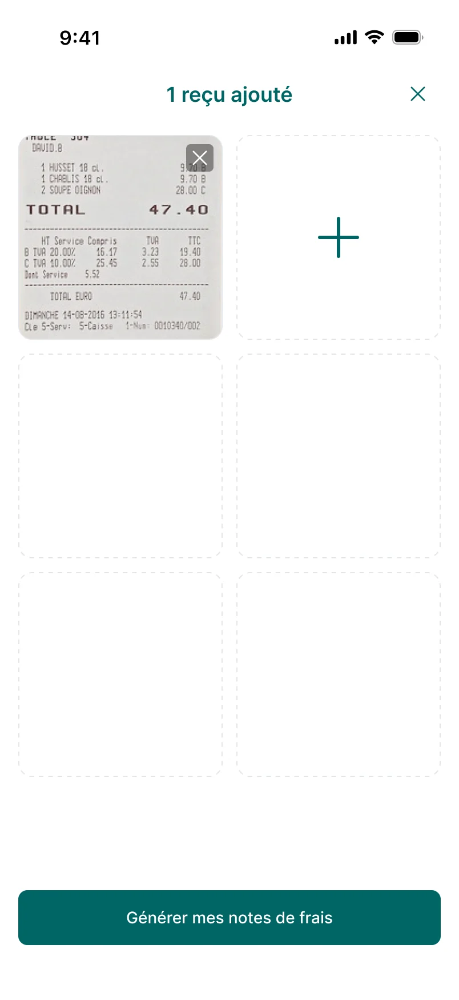
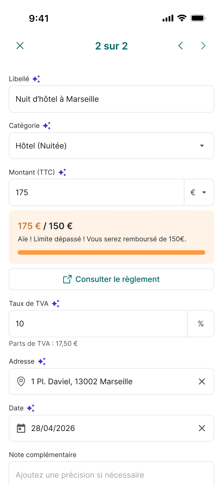
Une jauge compare le montant au plafond de la catégorie : verte quand la limite est respectée, orange quand elle est dépassée, avec le montant remboursé et un accès direct au règlement. La TVA se saisit en taux, sa part est calculée.
Version 2Le détail d’une note affiche son statut, l’action attendue, un justificatif consultable et remplaçable, et une timeline de validation avec le délai moyen. La confirmation annonce dès l’envoi le temps de validation.
Version 2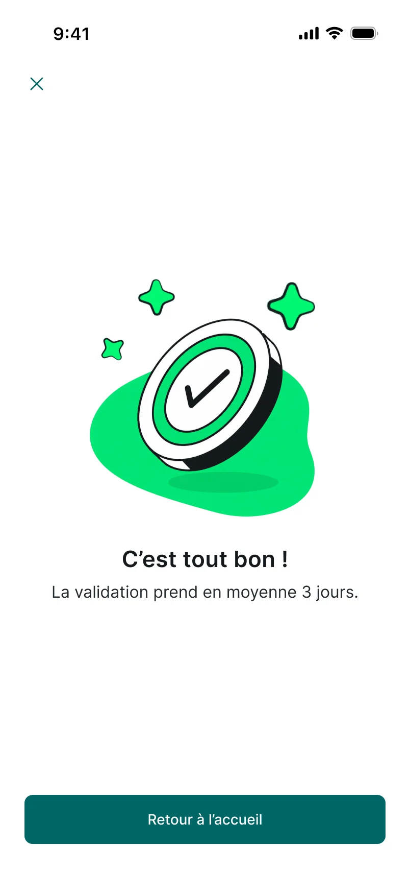
La politique de remboursement se consulte dans l’app (plafonds, justificatifs requis, délai de soumission), et le manager dispose d’un parcours de validation dédié.
Découvrez tout le parcours mis en place pour répondre à notre problématique :
« Comment simplifier la gestion des notes de frais en apportant une visibilité claire et rassurante sur les règles et les délais ? »
Voir le prototype Figma ↗Les critères de succès (délais, allers-retours, temps de saisie) se mesurent en conditions réelles : ils restent à suivre après un déploiement.
La confiance se joue dans les détails : une couleur ou un libellé mal choisi suffit à faire croire à un refus.
L’automatisation ne rassure que si elle reste vérifiable : pouvoir revoir son reçu compte autant que le pré-remplissage.
Après l’envoi, l’attente est le vrai irritant : un statut, une date et un montant à venir rassurent plus qu’une fonctionnalité de plus.
Tester à nouveau la solution
- Côté collaborateur : réduire encore les clics, joindre plusieurs justificatifs à une même note, enrichir les statuts.
- Côté manager : simplifier la validation, personnaliser la politique de remboursement et les catégories.
- Tester la version finale avec un panel élargi, des indépendants aux grandes PME.